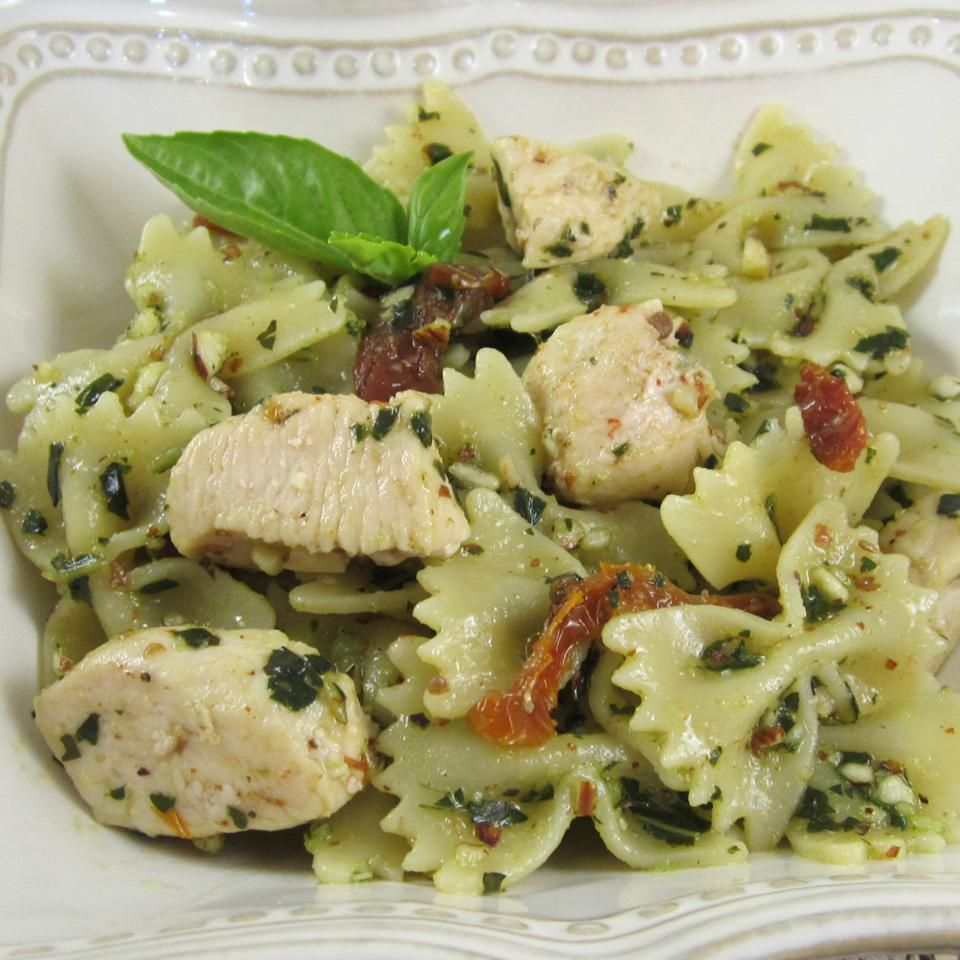

Pasta Pesto

Description
This chicken pesto pasta is easy and delicious. Serve with crusty bread and salad
for a quick dinner. Use as much or as little pesto sauce as you like. Using
homemade pesto will taste even better, but it adds to prep time. Enjoy!
Ingredients
- 1 (16 ounce) package bow tie pasta
- 1 teaspoon olive oil
- 2 cloves garlic, minced
- 2 skinless, boneless chicken breasts, cut
into bite-sized pieces
- 1 pinch crushed red pepper flakes, or to
taste
- ½ cup pesto sauce
- ⅓ cup oil-packed sun-dried tomatoes,
drained and cut into strips
Steps
- Bring a large pot of lightly salted water to a boil. Add pasta and cook until al
dente, 8 to 10 minutes; drain.
- Heat oil in a large skillet over medium heat. Sauté garlic until tender, then stir in
chicken and season with red pepper flakes. Cook until chicken is golden and
cooked through.
- Combine pasta, chicken, pesto, and sun-dried tomatoes in a large bowl; toss to
coat evenly.